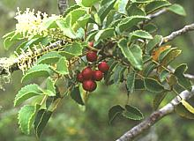
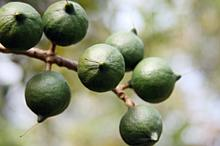
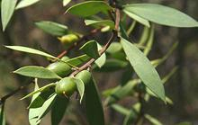
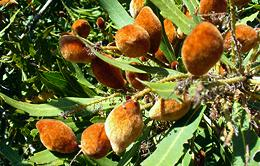
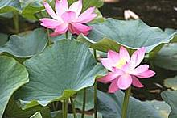

SAFARI
Users
Proteales Family
The Proteales are primarily Southern Hemisphere plants found in Australia, New Zealand and South America. Some are grown in the Northern Hemisphere, usually as introduced species.
Gevuina avellana [Chilean hazel, Avellano Chileno (Spanish), Gevuina avellana]
Native to Chili and Argentina this evergreen tree bears bright red berries
that turn black when ripe. The seeds are eaten raw or toasted and yield a
cooking oil high in monounsaturated oils (similar to olive oil) with a high
concentration of antioxidants, vitamin E and Omega 7. It is also much used
by the pharmaceutical industry in sunscreens and cosmetics. While it grows
well in California and the Pacific Northwest, commercial production comes
mainly from South America, but New Zealand is now ramping up to become a
significant producer.
Photo by Franz Xaver distributed under
GNU Free Documentation License..
Macadamia [Macadamia Nut, Poppel Nut, Bauple Nut, Bopple Nut, Bush Nut, Maroochi nut, Kindal kindal (indigenous), Queensland Nut, Macadamia tetraphylla, Macadamia integrifolia] This tree is native to Australia but best known to Americans from Hawaii where large commercial crops were first grown. These nuts are now also grown commercially in California, Africa, South America, Israel, Costa Rica and New Zealand. Macadamias remain a high priced nut because they are very difficult to
shell on a production scale. I shell them by dropping a nut into my big
Thai granite mortar and hitting it with the heavy pestle. This way the
shells don't fly everywhere. The oil is prized by the pharmaceutical
industry due to it's 22% content of Omega-7 palmitoleic acid which makes
it particularly good for skin care products.
Photo © i0128
.
Geebung [Persoonia lanceolata (Lance-leaf Geebung) | Persoonia laurina (Laurel-leaved Geebung)]
Of the many Geebung shrubs growing in Australia, only these two species
have been much eaten by the indigenous people. They are both native to
New South Wales, P. lancelota along the central coast and
P. Laurina farther inland. The natives of the region prefer the
fruit if P. lancelota. These fruits ripen to partially red, then
drop off the shrub to fully ripen to dark red. They are 0.4 inch long
and 0.3 inch diameter. The fruit is eaten from the ground, not picked
from the plant. These plants are not cultivated because nearly all
Persoonia are very difficult to propagate.
Photo of P. lancelota by Casliber distributed
under license Creative Commons
Attribution-ShareAlike v3.0 unported.
Wild Almond [Bitter almond; Ghoeboontjie; Ghoekoffie, Bitteramandel (Afrikaans); Brabejum stellatifolium] Not a real Almond, this low spreading tree is native to the west coast of South Africa. The fruits look much like almonds, but are laced with lethal amounts of bitter prussic acid. While sometimes called "bitter almond", it is not to be confused with the bitter almond of commerce, which is just a high cyanide variety of the regular almond. Toxicity did not keep these seeds from being eaten. The Hottentots
soaked and roasted the seed kernels to drive off the toxins, and did the
same with roots, which are very high in cyanide. The early Dutch
settlers similarly soaked the seed kernels and roasted them to make a
coffee substitute. Porcupines, an important food animal in South Africa,
feast on these seeds.
Photo by Andrew Massyn contributed to the Public Domain
.
|
Nelumbonaceae Family
This is a Northern Hemisphere family, often confused with Water Lilies, but they are easy to tell apart. Water lily leaves have a deep notch from the edge all the way in to the stem, and they always float on the water surface. Lotus leaves are fully circular with stems in the center, no notch, and generally stand proud of the water surface (see photo below). Interestingly, though very distantly related, their very similar flowers are both noted for mild psychoactive and anesthetic properties.
Lotus [Nelumbo nucifera, Sacred Lotus] [Nelumbo lutea, American Lotus, Yellow Lotus, Water-chinquapin] Native to a vast area stretching from Afghanistan to Vietnam, the Asian Lotus has been an important source of food throughout it's entire range since prehistoric times. It has since been carried to all tropical and subtropical regions of the world. Flowers, seeds, leaves and rhizomes (roots) are all edible and popular throughout India, East Asia and Southeast Asia. The Lotus was unknown in Egypt until the Persian invasion. The "sacred lotus" of ancient Egypt was instead the blue water lily Nymphaea caerulea. Photo © i0138 . The American lotus (Nelumbo lutea) is similarly edible to the
Asian species and was a significant native food resource into Colonial
times. It is indigenous to the southeastern U.S., Mexico, Honduras and
the West Indies but has been dispersed farther by humans.
Details and Cooking.
|